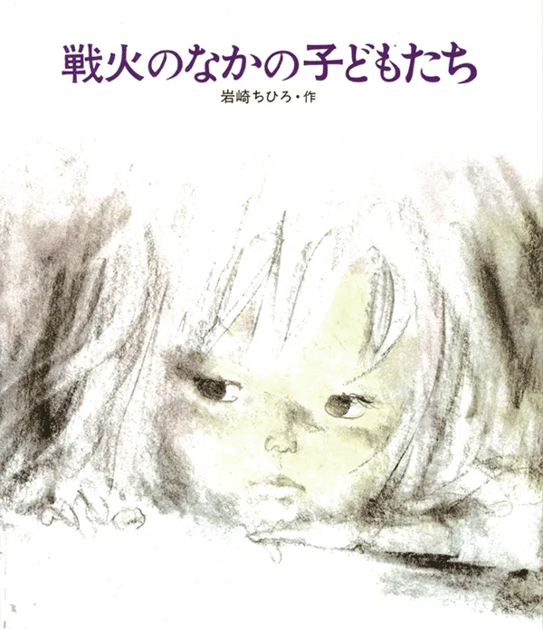

ベトナム戦争で死んでいった子どもたち、生きぬいてきた子どもたちへの熱い思いがこめられた絵本。いわさきちひろ最後の絵本。

ベトナム戦争で死んでいった子どもたち、生きぬいてきた子どもたちへの熱い思いがこめられた絵本。いわさきちひろ最後の絵本。
#夏休みオンライン反戦読書デモ2026 岩崎ちひろ『戦火のなかの子どもたち』1973 子どもの頃第二次世界大戦を体験したいわさきちひろが、東京の仕事場で終わらないベトナム戦争の戦火の中にいる子どもたちに思いを巡らせます。

絵本「戦火のなかの子どもたち」(岩崎ちひろ・作) #夏休みオンライン反戦読書デモ2026 8月15日終戦の日に思いを致すとこの絵が浮かびました。 この絵本でオンラインデモに参加・連帯します🙂 #戦争に反対する絵描きの会 #NoWar #NoGenocide


#オンライン反戦読書デモ0719